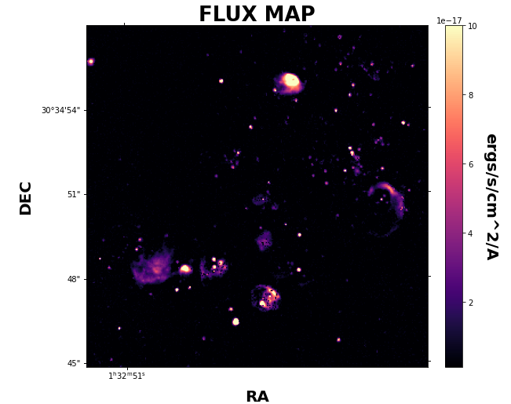

Example SN1 & SN2¶
This example is the much condensed version of our basic example for those of us already familiar with the parameters and how LUCI works. Let’s get started!
You can find the data used in this tutorial at the CADC database ([http://www.cadc-ccda.hia-iha.nrc-cnrc.gc.ca/en/search](http://www.cadc-ccda.hia-iha.nrc-cnrc.gc.ca/en/search)) searching for M33_FIELD7 SN1 and SN2.
# Imports
import sys
sys.path.insert(0, '/media/carterrhea/carterrhea/SIGNALS/LUCI/') # Location of Luci
from LuciBase import Luci
import LUCI.LuciPlotting as lplt
We now will set the required parameters. We are also going to be using our machine learning algorithm to get the initial guesses for SN1 only.
#Set Parameters
# Using Machine Learning Algorithm for Initial Guess
Luci_path = '/media/carterrhea/carterrhea/SIGNALS/LUCI/'
cube_dir = '/media/carterrhea/carterrhea/M33' # Path to data cube
cube_name = 'M33_Field7_SN1.merged.cm1.1.0' # don't add .hdf5 extension
object_name = 'M33_Field7_SN1'
redshift = -0.0006 # Redshift of M33
resolution = 5000
ML_bool = True
We intialize our LUCI object
# Create Luci object
cube = Luci(Luci_path, cube_dir+'/'+cube_name, cube_dir, object_name, redshift, resolution, ML_bool)
The output will look something like this:

Let’s quickly create a deep frame
# Create Deep Image
cube.create_deep_image()
We now fit part of our cube defined by the bounding box 1000<x<1500 and 250<y<750 with a Gaussian on the Halpha line, the NII-doublet, and the SII-doublet with a binning of 4. We are also going to constrain our velocities and sigmas.
# Fit!
vel_map, broad_map, flux_map, chi2_fits = cube.fit_cube(['OII3726', 'OII3729'], 'gaussian', [1,1], [1,1], 500, 1100, 700, 1300, bkg=bkg_sky, binning=2)
The output should look something like this:

Let’s take a look at the velocity map. We can play with the colorbar limits with the clims argument.
lplt.plot_map(flux_map[:,:,0], 'flux', cube_dir, cube.header, clims=[1e-17, 3e-16])
And let’s see what this looks like!

Let’s do the same for SN2 but this time set the machine learning boolean to False.
#Set Parameters
# Using Machine Learning Algorithm for Initial Guess
Luci_path = '/media/carterrhea/carterrhea/SIGNALS/LUCI/'
cube_dir = '/media/carterrhea/carterrhea/M33' # Path to data cube
cube_name = 'M33_Field7_SN2.merged.cm1.1.0' # don't add .hdf5 extension
object_name = 'M33_Field7_SN2'
redshift = -0.0006 # Redshift of M33
resolution = 5000
ML_bool = False
We intialize our LUCI object
# Create Luci object
cube = Luci(Luci_path, cube_dir+'/'+cube_name, cube_dir, object_name, redshift, resolution, ML_bool)
The output will look something like this:
Let’s quickly create a deep frame
# Create Deep Image
cube.create_deep_image()
We now fit part of our cube defined by the bounding box 1000<x<1500 and 250<y<750 with a Gaussian on the Halpha line, the NII-doublet, and the SII-doublet with a binning of 4. We are also going to constrain our velocities and sigmas.
# Fit!
vel_map, broad_map, flux_map, chi2_fits = cube.fit_cube(['OIII4959', 'OIII5007', 'Hbeta'], 'gaussian', [1,1,1], [1,1,1], 500, 1100, 700, 1300, bkg=bkg_sky, binning=2)
The output should look something like this:
Let’s take a look at the velocity map. We can play with the colorbar limits with the clims argument.
lplt.plot_map(flux_map[:,:,0], 'flux', cube_dir, cube.header, clims=[1e-17, 3e-16])
And let’s see what this looks like!
